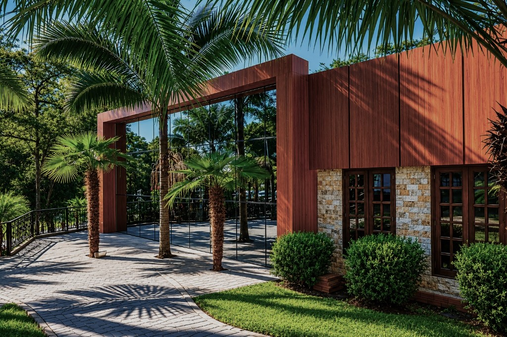
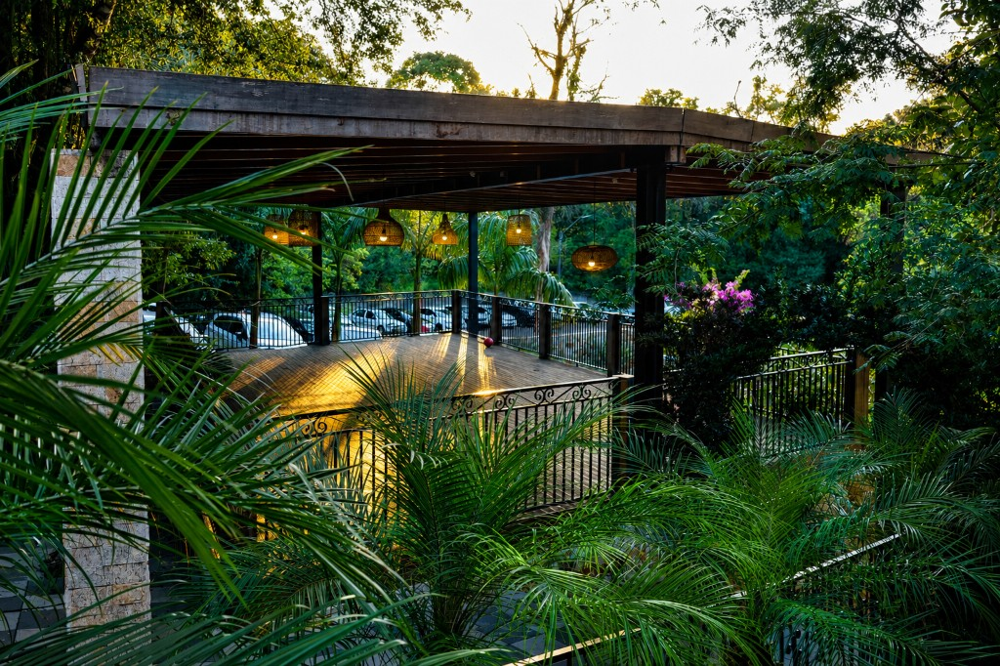
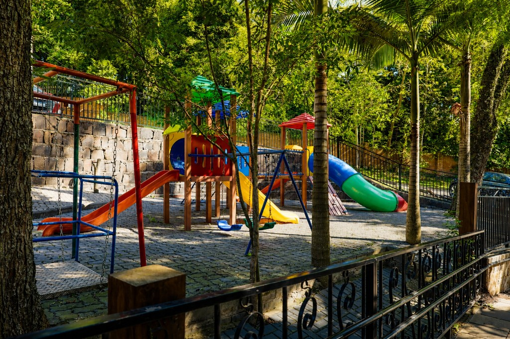
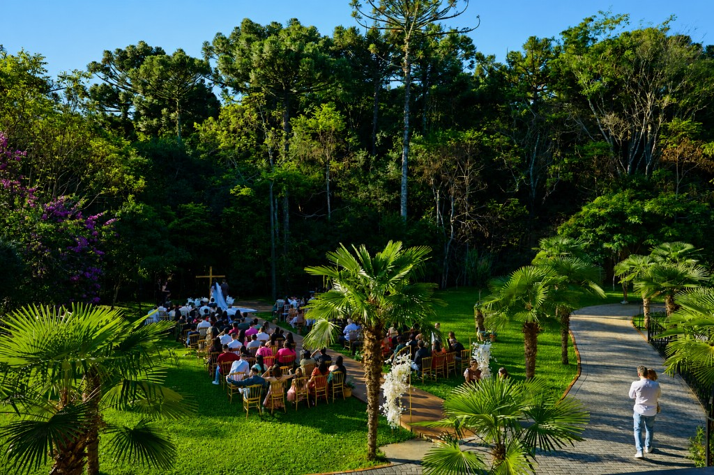

Atendimento consultivo
Planejamento com acompanhamento próximo para garantir tranquilidade em todas as etapas.
Chácara do Cris, há 12 anos transformando datas especiais em memórias eternas.
Há mais de 12 anos, a Chácara do Cris nasceu de um momento especial: o casamento de uma amiga que se encantou por este cenário. O que começou como um sonho cresceu, ganhou prestígio regional e, hoje, já soma mais de 400 eventos realizados.
Em 2026, passamos por uma transformação completa. Unindo natureza e sofisticação, nosso espaço foi totalmente renovado para oferecer um design moderno, atemporal e acolhedor.
Seja para casamentos, celebrações ou eventos corporativos, estamos prontos para eternizar os seus melhores momentos.
Venha se encantar com cada detalhe. Agende sua visita!




FACHADA
DECK COBERTO
PLAYGROUND
JARDIM


Planejamento com acompanhamento próximo para garantir tranquilidade em todas as etapas.
Arquitetura, paisagismo e iluminação que valorizam fotos e criam uma atmosfera única.
Fluxo inteligente para convidados, fornecedores e equipe, evitando imprevistos no grande dia.
Formatos para eventos intimistas e grandes celebrações, sempre com acabamento premium.
O Espaço Callisia foi projetado para proporcionar experiências únicas, unindo natureza, conforto e sofisticação. Cada ambiente foi pensado para valorizar momentos especiais e tornar seu evento inesquecível.
Escolha o formato ideal e personalize com os complementos que desejar.
Essencial
Ideal para quem já possui fornecedores e busca um espaço elegante e estruturado.
Mais escolhido
Perfeito para eventos sofisticados com suporte total e experiência impecável.
Corporativo
Confraternizações e eventos empresariais com infraestrutura profissional.
Gastronomia da casa
Experiência completa para o seu evento: entradas de boas-vindas, buffet principal com duas opções de cardápio e lanche da madrugada para encerrar a festa com estilo.